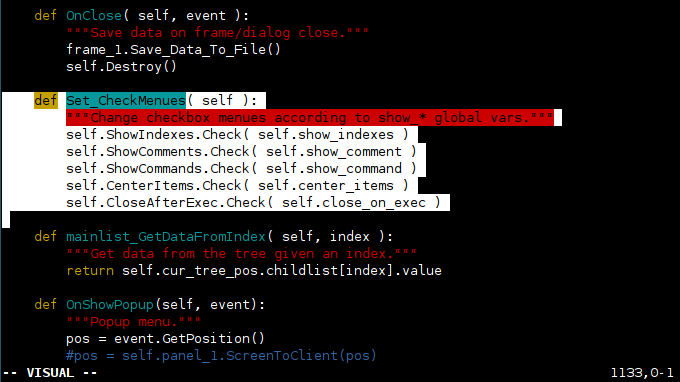
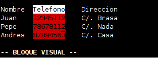
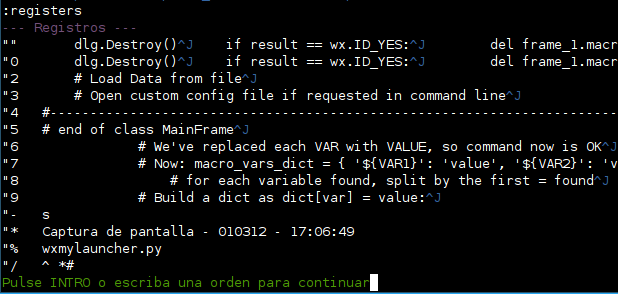

Copiar y pegar¶
Cuando borramos texto (con dd, dw, x o similares), dicho texto (líneas, palabras o incluso un simple carácter) se almacena en un buffer interno. Digamos que no se borra sino que se corta. Podemos pegar el último texto borrado utilizando el comando p. Esta es la primera lección de este capítulo: p = paste = pegar. Cabe destacar que una línea cortada con dd, al ser pegada con p será insertada debajo de la línea actual del cursor. Si lo que pegamos no es una línea completa sino una porción de texto, entonces será insertado a la derecha de la posición actual del cursor.
Existe una variante de p que es P, cuya diferencia es que pega el texto a la izquierda de la posición actual del cursor para porciones de texto, o en la línea sobre el cursor para líneas completas.
Como siempre, podemos aprovechar los multiplicadores para ahorrarnos trabajo: Con dd podemos cortar una línea y con, por ejemplo, 10p podemos pegar 10 copias de la linea cortada.
En general, dd y p (para una sóla línea) o
Finalmente, comentar que existe un comando especial llamado ]p que a la hora de pegar tiene en cuenta la indentación del código por lo que permite pegar código en diferentes niveles de indentación del que lo hemos cortado, sin tener que reajustar todas las líneas.
Seleccionar: el modo visual¶
Aparte de poder pegar texto cortado con comandos, en Vim podemos seleccionar texto al estilo de lo que se puede hacer en otros editores. Si pulsamos la tecla v pasaremos a modo visual, donde con los cursores (o las teclas de movimiento de vim) extendemos el área de selección para después operar con ella. Nos posicionamos en la primera letra de lo que queremos seleccionar (o la última), y usamos arriba, abajo, izquierda y derecha para hacerlo, y podemos cancelar la selección en cualquier momento pulsando ESCAPE.
Existen 2 variantes más del modo visual para seleccionar texto: la primera es V (v mayúscula), que trabaja sólo con selección de líneas completas (usando las teclas de arriba y abajo). Es decir, si pulsamos v (minúscula) en medio de una frase, podremos mover la selección a derecha o izquierda para coger palabras sueltas (y también frases con arriba y abajo), mientras que V (mayúscula) sólo trabaja con frases completas.

La segunda variante son las selecciones de bloques o selecciones verticales. Supongamos que tenemos una tabla como la siguiente:
Nombre Telefono Direccion
Juan 12345112 C/. Brasa
Pepe 78678112 C/. Nada
Andres 87894563 C/. Casa
Pues bien, si quisieramos borrar la columna teléfono completa, en muchos editores que no disponen de selecciones verticales tendríamos que ir línea a línea borrando Telefono, 12345112, 7867811 y 87894563. En Vim podemos hacer una selección vertical de un bloque que comprenda justo esa columna y trabajar sobre ella: nos posicionamos sobre la T de Teléfono y pulsamos CTRL+V, con lo que pasamos a modo de edición de bloques. Usando los cursores o las teclas de movimiento seleccionamos la columna, y ya podemos trabajar sobre ella (cortarla, copiarla, etc).

Nótese que Ctrl+V es, en Vim para Windows, el atajo para pegar texto desde el portapapeles, por lo que en Windows puede ser necesario remapear esta tecla a otro atajo de teclado (con map, como veremos más adelante).
Algo muy interesante de cuando estamos en modo visual es que podemos usar las teclas de movimiento especiales. Si por ejemplo pulsamos w, la selección avanza una palabra completa. Si pulsamos as (a sentence), la selección avanza una frase entera (hasta el próximo punto o separador), y podemos repetir los comandos que deseemos y combinarlos hasta seleccionar el texto deseado.
Es decir, que lo bueno del modo visual es que podemos usar los mismos "verbos" de movimiento que usa Vim en modo comando: 0, $, G, gg, fCHAR, /string, etc. Además, podemos usar verbos espaciales para seleccionar bloques delimitados por comillas, paréntesis, corchetes, etc:
| Comando | Resultado de la sección |
|---|---|
| iX | Seleccionar un bloque entero de texto basado en X, donde X puede ser: w o W palabra completa s ⇒ sentence (frase) p ⇒ párrafo b or ( ⇒ bloque de paréntesis (contenido entre ( y ) ). B o { ⇒ bloque de { llaves } t ⇒ contenido de un |
Un pequeño apunte (no muy utilizado) sobre la selección de texto: si estamos seleccionando texto y vemos que queremos modificar el INICIO de la selección, podemos pulsar o para cambiar entre los 2 límites de la selección y cambiar uno u otro. La versión mayúscula, O se utiliza para alternar entre las 4 esquinas de las selecciones verticales de CTRL+V.
Copiar, cortar y pegar¶
Una vez tenemos el texto seleccionado (de cualquiera de las 3 formas descritas), podemos borrarlo, cortarlo y copiarlo. Estando en modo visual, con el texto sobre el que queremos actuar marcado, podemos copiarlo pulsando y (de yank) y cortarlo, ya sea con d, x y c. La diferencia entre estos 3 modos de copiar está en que d y x se mantienen en modo comando tras cortar el texto, mientras que c (que recordemos que es modificar), se pasa a modo inserción tras hacerlo. Por supuesto, si nos arrepentimos del cortado podemos pulsar u (undo) para deshacerlo.
Recordemos que en cualquier momento podemos volver a pegar un texto copiado o borrado usando p.
Así pues, mediante v, y, d y p se realizan todas las operaciones de selección, copiado, borrado/cortado y pegado, respectivamente.
En el caso concreto de y, dado que es un operador podemos anteponerlo a otros comandos de Vim. Por ejemplo, yw copia una palabra completa, y y5w copia las siguientes 5 palabras completas en el buffer de memoria. Y, para finalizar, igual que ocurre con d y dd, duplicando la y como yy copiamos a memoria la línea actual completa (sin necesidad de seleccionarla). Utilizando multiplicadores, podemos por ejemplo copiar la línea actual y 3 más mediante 4yy.
Pegar texto con autoindent activado¶
Si tenemos activado el modo de autoindentación (set ai o set autoindent), cada vez que pulsamos ENTER, el cursor se indenta de forma automática al nivel (columna) de la línea en que lo hemos pulsado. Esto, que resulta muy útil programando, puede ser problemático para pegar texto con múltiples líneas, ya que cada retorno de carro del texto pegado provocará que la línea empiece al nivel de la anterior, y que además se sumen los espacios y tabuladores de lo que estamos pegando. El resultado es el siguiente:
Copiamos el siguiente texto (con el ratón):
result = dlg.ShowModal()
dlg.Destroy()
if result == wx.ID_YES:
del frame_1.macros[index]
frame_1.Save_Data_To_File()
elif result == wx.ID_NO:
pass
dlg.Destroy()
Y lo pegamos en otra parte del documento en modo inserción con el botón central del ratón y lo que obtenemos es lo siguiente:
result = dlg.ShowModal()
dlg.Destroy()
if result == wx.ID_YES:
del frame_1.macros[index]
frame_1.Save_Data_To_File()
elif result == wx.ID_NO:
pass
dlg.Destroy()
Como puede verse, cada enter recibido ha indentado la línea al nivel de la línea actual, sumando además los espacios que ya tenía el texto que se está pegando, resultando en ese horror.
Esto sólo sucede si pegamos texto "con el ratón", sin usar los comandos de copiado y pegado de Vim. Para pegar texto "con el ratón" y que esto no suceda, es recomendable desactivar el modo autoindent bien con " set paste" o " set noai".
Tuberías (pipes) para filtrar texto¶
Cuando tenemos texto seleccionado tanto en modo normal como en modo visual, podemos pasar ese texto a través de cualquier programa externo para filtrarlo. Por ejemplo, supongamos que tenemos un programa que acepta cualquier texto por entrada estándar y nos saca el texto modificado (ordenado alfabéticamente, cifrado, o cualquier otra operación) por la salida estándar. En ese caso, si queremos manipular un párrafo de nuestro fichero podemos seleccionarlo (con 'v' en modo visual, por ejemplo), y mientras está el párrafo seleccionado, pulsamos:
:!programa
Por ejemplo, supongamos que queremos utilizar el comando sort de UNIX para ordenar alfabéticamente las diferentes líneas de un párrafo. Seleccionamos el párrafo en cuestión con 'v' y los cursores y pulsamos:
:!sort
El texto seleccionado será enviado al comando sort por entrada estándar y será reemplazado por la salida de la ejecución de sort. De la misma forma podemos ordenar alfabéticamente el fichero entero, seleccionándolo todo:
1G
v
gg
:!sort
O, lo que es lo mismo:
- 1G = ir a la primera línea del fichero
- v = ir a modo visual
- gg = llevar al cursor al final del fichero (seleccionando todo el fichero) *:!sort = pasar el texto seleccionado (todo el fichero) al comando sort, y reemplazarlo por la salida de la ejecución del mismo.
O, más sencillo aún:
:%!sort
(% representa a una selección del fichero completo)
El filtrado (pipe a programa externo) nos permite muchas cosas: cifrar texto (llamando a pgp/gpg), pasárselo a programas externos que lo manipulen, etc.
Otro ejemplo de uso de los filtros es el formateo y justificación de texto. Si tenemos instalado el comando par (un programa de Linux para formatear párrafos), podemos seleccionar texto en modo visual y filtrarlo a través de par mediante, por ejemplo:
:!par 72
La salida de par 72 (si tenemos instalado par en el sistema, claro) consiste en justificar el texto a 72 columnas, cosa que nos puede ser útil en determinadas circunstancias de edición de textos.
Nótese que también podemos aplicar filtros a rangos de líneas y al texto delimitado por 2 marcas (posteriormente veremos cómo establecerlas):
:'<,'> !sort -> Sobre la selección :'t,'b !sort -> Sobre el texto entre 2 marcas :N,M !sort -> Entre 2 rangos de líneas (N a M)
Insertar ficheros y salida de comandos¶
Podemos insertar el contenido de un fichero de texto en la posición actual del cursor mediante el comando :r. Tan sólo deberemos especificar el fichero a insertar (con su ruta si es necesario):
:r fichero
El comando :r nos permite también insertar la salida (el resultado de la ejecución) de comandos del sistema en nuestro documento. Por ejemplo, si queremos insertar la salida del comando uptime en la posición actual del cursor, pasamos a modo comando (ESC) y ejecutamos:
:r !uptime
La diferencia entre este comando y el anterior es el símbolo de admiración cerrada '!', que indica ejecución.
Múltiples "portapapeles": los registros de borrado¶
Como ya hemos visto, en Vim podemos seleccionar texto con el modo visual usando v para movimiento carácter a carácter o bien V para líneas completas. Una vez seleccionado, lo podemos copiar con y, cortar con c y borrar con d.
De la misma forma, fuera del modo visual (en modo comando) con dd borramos una línea entera, con 3dd 3 líneas enteras, con dw una palabra entera, con x un cáracter, con d0 desde el cursor al principio de línea, con d$ desde el cursor al final de línea, con d/cadena desde el cursor hasta la aparición de "cadena", etc. Todo ellos son combinaciones de repetidores, el comando de borrado d y destinos (w=word, $=end of line, /cadena=primer resultado de la búsqueda, etc).
Por otra parte, los comandos básicos para pegar en Vim son p para pegar en justo detras de la posición del cursor, y P para pegar antes de la posición del cursor.
Vim autodetecta si el texto que tenemos en su buffer interno, el que estamos pegando, lo habíamos copiado carácter a carácter o bien mediante líneas completas y utiliza esto para pegar dicho texto bien a la derecha/izquierda del cursor, o bien arriba/abajo de la línea actual. Si copiamos una porción de código, la pegará "dentro" de la línea actual mientras que si copiamos líneas completas la pegará arriba/abajo de la línea actual.
Además de pegar antes o después del cursor, también podemos usar p cuando tenemos realizada una selección visual, de forma que nuestro texto pegado reemplazará al texto seleccionado.
Ahora bien: estos copiados y pegados tienen como destino y origen un buffer interno de Vim, y no el portapapeles del sistema que usan típicamente otras aplicaciones.
Existen 26 registros (26 portapapeles diferentes) donde podemos copiar texto y pegar desde ellos. Sí, en lugar de tener un único "portapapeles", tenemos 26 diferentes (de la a a la z) donde podemos copiar texto para usarlo después. Esto es extremadamente útil cuando queremos cortar varias porciones de texto de un fichero para agruparlos en una posición final, ya que podríamos usar los registros a, b, c y d (por ejemplo) para almacenar 4 bloques de texto y después pegarlos juntos, evitando subir y bajar continuamente en el fichero para ir llevando cada bloque a su lugar destino.
Esto es extremadamente útil porque tenemos 26 buffers donde copiar y pegar texto y de esta forma podemos copiar varios bloques de texto sin perder copias anteriores. Cuando no indicamos un buffer específico (cuando usamos yy o dd, por ejemplo), estamos usando el Unnamed Buffer (el buffer sin nombre), pero podemos hacer referencia a cualquiera de los 26 registros disponibles.
Los registros se referencian con las comillas dobles, de forma que tenemos desde "a hasta "z. Usando el nombre del registro como prefijo, hacemos que y, yy, d, dd, p, etc utilicen dicho registro:
- "ayy–> Copiar línea de texto actual en el registro a.
- "add–> Borrar línea de texto actual y poner su contenido en el registro a.
- "ap–> Pegar el contenido del registro a.
Resumiendo:
- "x
–> Realizar con registro x.
Esto también funciona con selecciones visuales. Si seleccionamos texto en modo visual y pulsamos "ac, cortaremos el texto seleccionado al registro a.
Así pues, tenemos 26 posibles registros los cuales, además, no se pierden al cerrar la sesión de Vim siempre y cuando tengamos Vim en modo "nocompatible" en el vimrc.
Existen también una serie de registros "especiales":
- Registro "_–> El registro _ (subrayado) es el registro "black hole" (agujero negro). Lo que escribamos en él no se guarda, permite borrar de verdad texto. Es muy útil porque nos permite borrar texto sin eliminar lo que tengamos en el buffer de copiado y pegado. Si tenemos algo en el portapapeles (seleccionado y copiado con y) y queremos borrar una línea con dd sin perder el contenido actual del buffer, podemos hacer "_dd.
- Registro "0–> Contiene el texto del comando y (yank) más reciente, de modo que "0p pegará el último texto copiado incluso si hemos utilizado un comando de borrado después del "y".
- Registros "1 a "9–> Guardan de forma rotatoria los últimos 9 borrados (siendo el 1 el más reciente).
- Registros " * y "+–> Se refieren al portapapeles del sistema Windows (*) y X11 (+) (sí, es posible copiar y pegar en el portapapeles del S.O. desde comandos de Vim).
- Registro ""–> El "Unnamed Register" (registro sin nombre). Es el registro en el que acaba el texto que acabamos de copiar o cortar.
Un apunte sobre el registro "0 (y su hermano el registro "-): cuando copiamos, cortamos, o incluso cuando borramos (ya sean caracteres o líneas completas), Vim guarda el texto en estos 2 buffers de forma que incluso si hemos borrado después algo con d, seguimos teniendo acceso al "yank" anterior. Si el texto es menor de una línea, se guarda en un registro llamado "-. Para más de una línea, se almacena en "0. En otras palabras, un "delete" borrará el texto pero no afectará a "0.
Podemos ver el contenido de los diferentes "registros" temporales con el comando :registers y recuperar el contenido de cualquiera de ellos en el documento con "

De esta forma, podemos acceder a contenidos anteriormente borrados sin tener que deshacer múltiples pasos (que puede implicar deshacer también cambios correctos que hicimos entre esos pasos).
Finalmente, como si los registros de Vim no fueran ya de por si suficientemente potentes, podemos añadir texto al contenido de un registro usándolo en mayúsculas:
- "Bdd–> Delete current line and append it to the content of the register "b.
Es muy importante entender cómo funcionan los registros de copiado y pegado no sólo por la potencia que dan, sino porque nos podamos encontrar con situaciones extrañas (con explicación lógica, como veremos):
Supongamos que queremos copiar una línea, ir a otra parte del documento, borrar una línea y pegar el texto copiado. Supongamos que hacemos lo siguiente:
- Vamos a la línea que queremos copiar y ejecutamos yy para copiarla (en el Unnamed Buffer).
- Vamos a la parte del documento donde está la línea a borrar y pulsamos dd para borrarla.
- Pulsamos p para pegar la línea que copiamos.
- De repente, en vez de aparecer la línea que habíamos copiado, se pega la que acabamos de borrar.
Esto ocurre porque el comando dd borra la línea actual y la copia en el Unnamed Buffer, con lo que perdemos el contenido que había antes en dicho buffer (la línea que copiamos inicialmente).
Para empezar, si nos acaba de ocurrir, simplemente basta con pegar nuestra línea copiada original con "0p, porque como ya dijimos, el registro 0 contiene el último copiado realizado con Comandos Yank "y" (y dicho buffer 0 no es sobreescrito por el dd).
Una vez esto nos ha ocurrido y ya sabemos por qué es, basta para la próxima vez con borrar la línea a eliminar usando el black-hole register como destino, con "_dd. Así borramos la línea pero no la guardamos en el Unnamed Register (no perdemos lo que habíamos copiado).
Finalmente, destacar que podemos especificar valores para alguno de los registros tanto en el fichero .vimrc como en comando de Vim con:
let @a = "My custom buffer content"
E incluso podemos utilizar el contenido de los registros en operaciones de sustitución u otros comandos mediante =@a:
:%s/PATTERN/\=@a/g
(Cambiaría todas las apariciones de PATTERN por el contenido del registro a).
Aunque todo esto pueda parecer complicado, todo se resume en:
- Existen 26 registros que se referencian con comida doble seguido de a-z: Ej: "a.
- Podemos aplicar las operaciones de yank, cut, delete y paste a un registro escribiendolo delante de la operación: Ej: "ap o "bdd.
- Existen registros especiales como un agujero negro (_), la última copia realizada (0), el portapapeles del sistema (*)...
- Usar un registro en mayúsculas permite AGREGAR texto al registro, sin sobreescribirlo.
El portapapeles del sistema¶
En determinados sistemas existe un portapapeles del sistema que es independiente del que usa Vim internamente. Si Vim está compilado para soportar el acceso al portapapeles del sistema podemos, como ya hemos visto, copiar cosas en él y pegar cosas desde él. Los comandos son los mismos, y y p, pero anteponiendo unas comillas dobles y un símbolo asterisco: "*. Así, quedaría "*y para copiar una selección de texto (o yy para la línea actual) y "*p para pegarlo.
En otras palabras, el portapapeles del sistema es uno de los registros internos que acabamos de ver, concretamente, "*.
Fuente: Guia de vim por : Santiago Romero